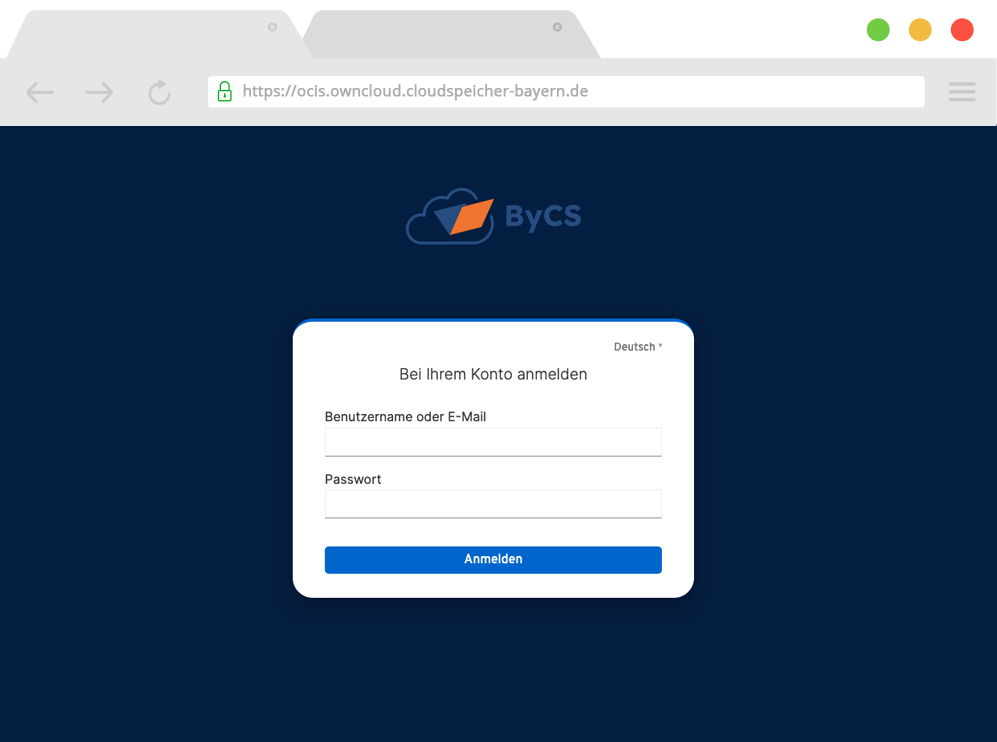

Erste Schritte
In diesem Kapitel erklären wir Ihnen die grundsätzlichen Schritte, wie Sie ownCloud einrichten. Hierbei gehen wir auch auf die Einrichtung der Clients ein.
Web-Client
Der einfachste, umfangreichste und deshalb meistgenutzte Weg, ownCloud zu benutzen ist der Web-Client. Diesen rufen Sie einfach wie von anderen, modernen Softwarelösungen gewohnt, in Ihrem bevorzugten Browser auf. Die URL, unter der Sie ownCloud für die verifizierende Teststellung erreichen lautet:
Der Web-Client ist für alle modernen Browser optimiert und voll funktional. Weitere Informationen finden Sie in Kapitel 3.1: Web.
Login
Nach dem Aufrufen der URL wird Ihnen die Anmeldemaske angezeigt.

Hier können Sie sich mit den in Kapitel 4: Accounts gelisteten Accounts anmelden. Tragen Sie dazu den Benutzernamen und das Passwort in die dafür vorgesehenen Felder ein und klicken Sie auf "Anmelden".
Sie befinen sich nun in der Standardansicht.

Diese gliedert sich wie folgt:
Top Naviagtion

Hier finden Sie statische Elemente, die unabhängig vom unteren Bereich immer sichtbar sind. Von links nach rechts:
- App-Switcher: Hier können Sie zwischen verschiedenen Apps wechseln - sofern welche installiert sind. In dieser Teststellung ist keine Erweiterung installiert.
- Logo: Dies wurde individuell angepasst werden und ist den Benutzern als feststehendes Objekt eine gute Orientierungshilfe. Mit Klick auf das Logo gelangen Sie stets in Ihren persönlichen Speicherbereich.
- Suchfeld: Hier können Sie nach Dateien und Ordnern suchen. Die Suche ist ein sehr mächtiges Tool und umfasst u.a. eine Volltextsuche und Suche nach Tags. Geben Sie hierzu einfach Ihren gewünschten Suchbegriff ein. Es werden Ihnen direkt Vorschläge gemacht und mit Drücken der Enter-Taste gelangen Sie auf eine umfassende Suchergebnis-Seite.
- Initialen: Hier finden Sie Informationen zum aktuell angemeldeten Benutzer, die Einstellungen, können Sich vom Web-Client abmelden und eine Anzeige über die aktuelle Nutzung Ihres Speicherbereichs.
Linke Sidebar

Hier finden Sie Navigationselemente, die Sie schnell auf Ihre persönlichen Bereiche bringen:
- Persönlich: Dies ist Ihr eigener, persönlicher Speicherbereich, auf den nur Sie Zugriff haben.
- Geteilt: Hier finden Sie einen Überblick über Resourcen, die Sie mit anderen geteilt oder anderen mit Ihnen geteilt haben.
- Spaces: Hier finden Sie alle Spaces, auf die Sie Zugriff haben. Was genau Spaces sind und warum diese ownCloud so einzigartig machen erklärt Produktmanager Patrick Maier in diesem Blogbeitrag (englisch): Spaces: A Quantum Leap for Enterprise Collaboration.
- Gelöschte Dateien: Ein Papierkorb, der gelöschte Dateien zur Wiederherstellung bereithält.
Dateilliste

Das wohl wichtigste Element. Hier werden alle Dateien und Ordner des aktuellen Verzeichnisses angezeigt. Jede Datei und jeder Ordner bietet unterschiedliche Aktionen, die entweder über das Kontextmenü (= Rechtsklick) oder über die Aktionsicons am rechten Rand der jeweiligen Zeile aufgerufen werden können.
Rechte Sidebar

Hier finden Sie spezifische Informationen und Aktionsmöglichkeiten zur ausgewählten Datei oder Ordner. Die rechte Sidebar lässt sich über das  Icon ein- und ausblenden.
Icon ein- und ausblenden.
Eine vollständige Dokumentation der Weboberfläche und weiterführende Informationen finden Sie hier (momentan nur auf englisch verfügbar).
Desktop Client
Der Desktop Client ist die Schnittstelle zwischen Ihrem PC/Laptop und dem Cloud-Server, auf dem ihre Dateien gespeichert sind. Er dient dazu, Ihnen lokal alle Dateien und Ordner zur Verfügung zu stellen, z.B. für den Offline-Gebrauch. Der Desktop-Client stellt sicher, das Ihre lokalen Dateien und die auf Ihrem Server stets synchornisiert bleiben - Änderungen werden bei vorhandener Internetverbindung sofort weitergegeben. Und das alles ohne, dass Sie sich aktiv darum kümmern müssen.
Download
ownCloud stellt für alle gängigen Betriebssysteme entsprechende Desktop-Clients zur Verfügung. Sie können sich diesen hier herunterladen:
| Betriebssystem | Downloadlink | Systemvoraussetzungen |
|---|---|---|
| Mac | cloud.owncloud.com/index.php/s/Y9ytnbtNwnaWc1A -> *.pkg Datei anklicken | 64bit Mac OS X 10.12+ |
| Windows | cloud.owncloud.com/index.php/s/Y9ytnbtNwnaWc1A -> *.msi Datei anklicken | 64bit, 32bit version |
| Linux | TBD |
- |
Einrichtung
- Nach der Installation starten Sie das Programm. Sie werden beim ersten Start durch den Einrichtungsprozess geführt.

Klicken Sie rechts unten auf "Weiter"
- Damit der Client weiß, welches Benutzerkonto synchronisiert werden soll müssen Sie sich nun mit Ihrem Benutzer anmelden. Dies geschieht über die Anmeldemaske des Web Clients. Klicken Sie hierzu auf "Browser öffnen".

Es öffnet sich ein Browserfenster mit der Anmeldemaske.

Geben Sie hier nun Ihren Benutzernamen und Ihr Passwort ein. Diese können Sie dem Kapitel 4. Accounts entnehmen.
Klicken Sie abschließend auf "Anmelden".
- Nach erfolgreicher Anmeldung können Sie das Browserfenster schließen.

Wechseln Sie zurück um Desktop Client, der nun ebenfalls eine Erfolgsmeldung anzeigt.

Hiermit ist die grundsätzliche Einrichtung des Desktop Clients abgeschlossen. Es werden nun alle Resourcen, die Ihrem Benutzer zur Verfügung stehen, lokal auf Ihren PC synchronisiert.
Erweiterte Einstellungen
Die Schaltfläche "Erweiterte Einstellungen" öffnet ein Auswahlfeld, in dem Sie festlegen können, an welchen Speicherort auf Ihrem PC die Daten synchronisiert werden. Standardmäßig wird hierfür automatisch Ihr Benutzerverzeichnis ausgewählt. Um dies zu ändern klicken Sie rechts auf den Button […] und wählen Sie Ihr gewünschtes Verzeichnis.
Mit Klick auf "Beenden" schließen Sie die Einrichtung ab.